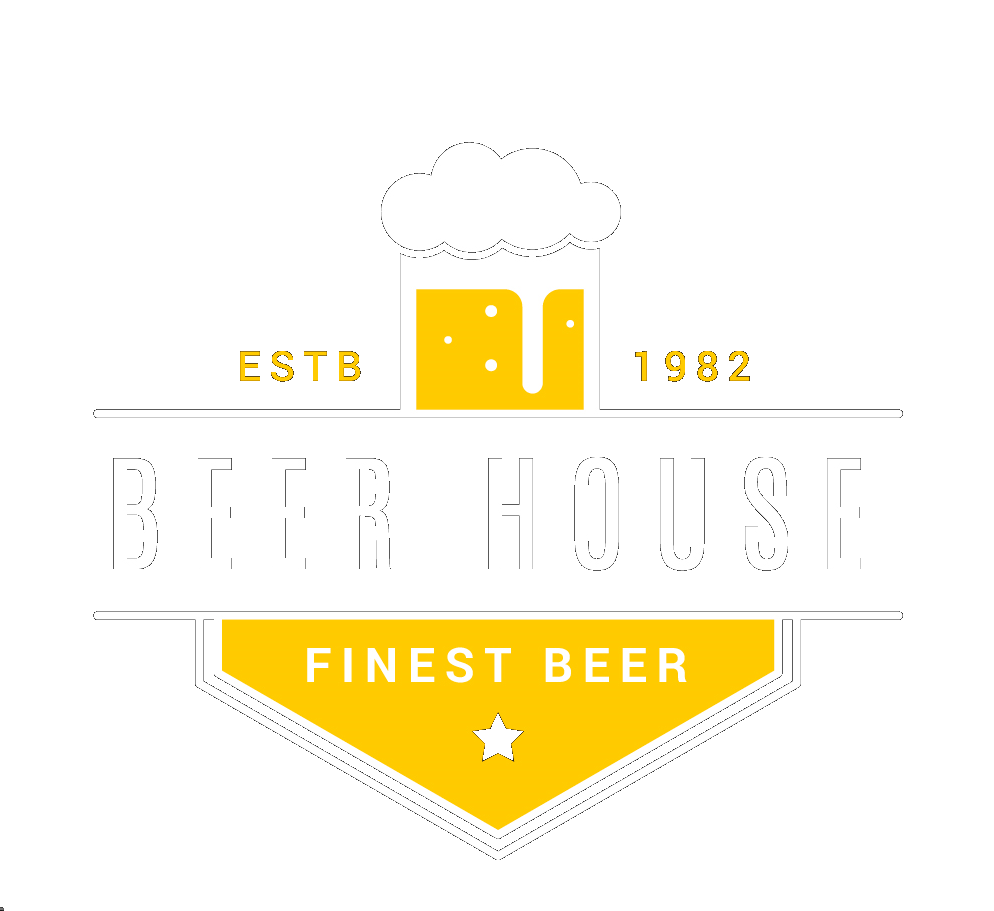

Conecte-se conosco
Beer House
|
Home
Sobre
Contato
CERVEJA
CERVEJA
CERVEJA
CERVEJA
CERVEJA
LAGER
São as cervejas de baixa fermentação. Elas são feitas com um levedo que age sob baixas temperaturas e na parte inferior do tanque de fermentação. Em geral, têm sabores e cheiros que lembram malte (cereais, pão tostado) e lúpulo (amargor, aromas florais). A maior parte dos estilos alemães e checos se encaixa nessa família.
PILSEN
O carro-chefe das cervejas lager foi inventado em 1842 na cidade checa de Pilsen. Antes dele, nenhuma cerveja era transparente, tão clara e leve no paladar. Essas características, aliadas à invenção da geladeira, permitiram que a bebida conquistasse o mundo.
INDIA PALE ALE
A IPA é uma cerveja carregada no álcool e no amargor. Isso porque o estilo foi inventado para atender às necessidades dos colonos ingleses da Índia, que precisavam de muito lúpulo e malte para aguentar a viagem de navio.